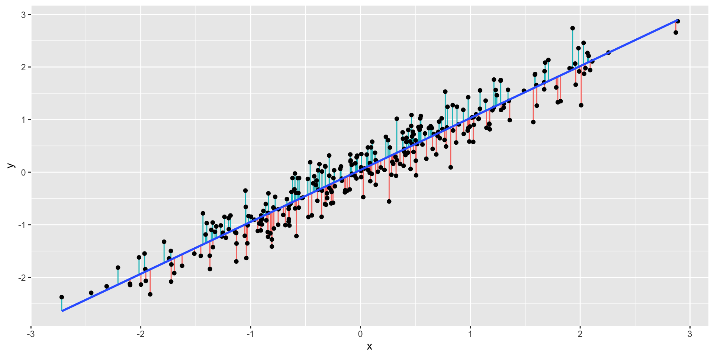
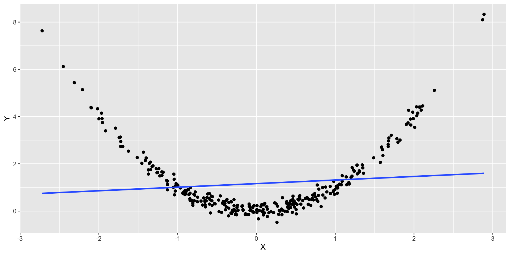
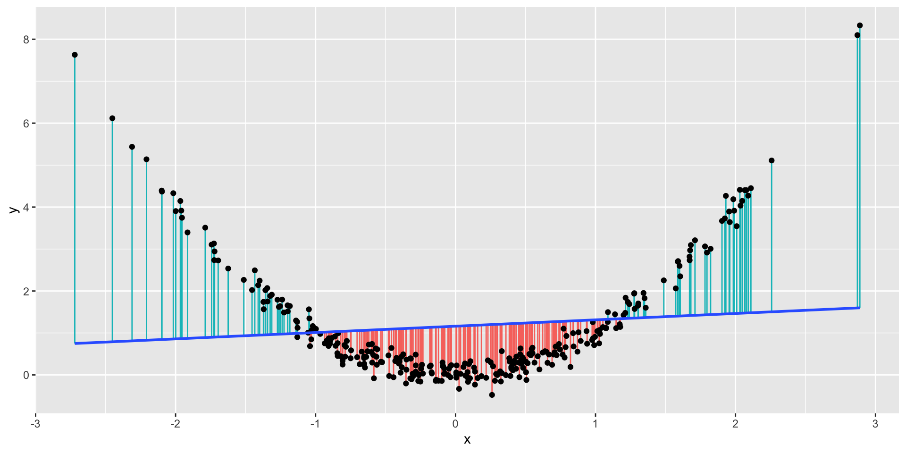
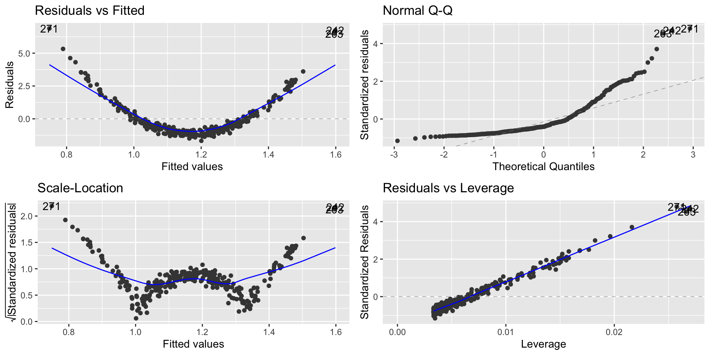

Class 03 - Regression Assumptions, and Potential Problems
Regression Assumptions, and Potential Problems
Linear models are useful:
Prediction - given a new observations
Explanatory power- which variables affects the response
But issues in linear model are not uncommon:
They can affect the explanatory, and predictive power of our model
They can affect our confidence in our model
We will look at some of the most common problems in linear regression, and how we can fix them
Regression Assumptions, and Potential Problems
These issues are related to:
Regression model assumptions
Influential observations, and outliers
Multiple regression assumptions
We need four things to be true for regression to work properly:
Linearity: \(Y\) is a linear function of the \(X\)’s (except for the prediction errors).
Independence: The prediction errors are independent.
Normality: The prediction errors are normally distributed.
Equal Variance: The variance of \(Y\) is the same for any value of \(X\) (“homoscedasticity”).
Non-Linearity
What we would expect to observe in a regression where there is a linear relation?
library(tidyverse)ggplot(linear_data, aes(x=X, y=Y)) +geom_point() +geom_smooth(method="lm", se =FALSE)
Residuals
Let’s plot the residuals \(r_i\), such that \[r_i = y_i − \widehat{y}_i\] where \(\widehat{y}_i = \widehat{\beta}_0 + \widehat{\beta}_1 x_i\) vs \(x_i\)
Residuals are basically the distances between the model and the points
Hopefully identify non-linear relationships
We are looking for patterns or trends in the residuals
Residuals
Plot of the residuals
How can these residuals be useful for us?

Regression diagnostic plots
We’ll use regression diagnostic plots to help us evaluate some of the assumptions.
The residuals vs fitted graph plots:
Residuals on the \(Y\)-axis
Fitted values (predicted \(Y\) values) on the \(X\)-axis
This graph effectively subtracts out the linear trend between \(Y\) and the \(X\)’s, so we want to see no trend left in this graph.
To check non-linearity we focus on the Residual vs. Fitted plot
library(ggfortify)lm1 =lm(Y ~ X, data = linear_data)autoplot(lm1)

Regression diagnostic plot
From the Residual vs. Fitted plot, we can observe that since the residuals are evenly distributed around zero in relation to the fitted values, we have that the linear regression model is a good fit for this data.
This means that we are learning the linear representation contained in this data.
Non-Linearity Example
What we would expect to observe if the relation is non linear?
ggplot(nonlinear_data, aes(x = X, y = Y)) +geom_point() +geom_smooth(method="lm", se =FALSE)

Non-Linearity Example
Let’s look at the residuals for this model

Let’s check the residual plot
Non-Linearity Example
lm2 =lm(Y ~ X, data = nonlinear_data)autoplot(lm2)
Non-Linearity Example
From the Residual vs. Fitted, we can observe that the residuals are not evenly distributed around zero.
This indicates that for lower and higher values of \(x_i\) our model is overpredicting and underpredicting in the mid values.
What are the implications in this case?
Worse predictions
Independence
Independence means that knowing the prediction error for one observation doesn’t tell you anything about the error for another observation
Data collected over time are usually not independent
We can’t use regression diagnostics to decide the independence
We have to measure the autocorrelation of the residuals
We’ll get back to autocorrelation when we discuss Time Series models
Normality assumption
When we’ve been interpreting residual standard error (RSE) , we’ve used the following interpretation:
95% of our predictions will be accurate to within plus or minus \(2\times RSE\).
In order for this to be true, the residuals have to be Normally distributed